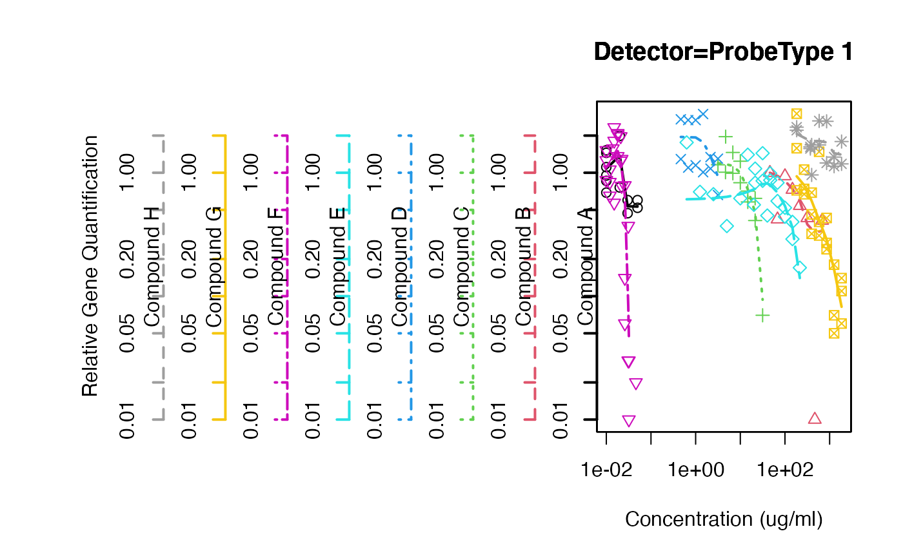
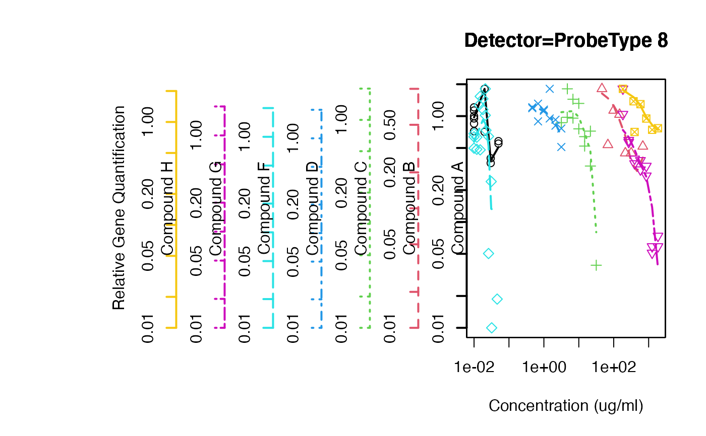

overplot.Rdoverplot graphs a set of variables defined on the same x-range
but which have varying y-ranges on the same plotting area. For each
set of y-values it uses a different color and line-type and and draws
a correspondingly colored and line-typed axis. panel.overplot
is used by overplot to draw the individual graphs.
overplot(formula, data = parent.frame(), same.scale = FALSE, xlab, ylab,
xlim, ylim, min.y, max.y, log = "", panel = "panel.overplot",
subset, plot = TRUE, groups, main, f = 2/3, ...)Formula describing the x and y variables. It should be of the form x ~ y|z. The conditioning variable (z) should be a factor.
Logical value indicating whether the plot region
should have the same range for all plots. Defaults to FALSE.
Standard plotting parameters. See
plot for details
Scalar or vector values used to specify the y plotting limits for individual plots. If a single scalar value is provided, it will be used for all plots. These parameters can be used specify one end of the individual plot ranges, while allowing the other end to vary with the data. EG, to force 0 to always be within the plot region.
character string ”, 'x', 'y', or 'xy', indicating which axes should be plotted on a log scale. Defaults to ” (neither).
a plotting function to be called to draw the individual
plots. Defaults to overplot.panel, which plots the points
and a lowess smooth.
Logical value indicating whether to draw the plot.
(optional) character vector giving the names of levels of the conditioning variable to plot. Defaults to all levels of the conditioning variable.
Smoothing parameter for lowess
parameters passed to model.frame to
obtain the data to be plotted from the formula.
This function essentially performs
tmp <- split(data, z)
for(i in levels(z))
plot( x ~ y, data=tmp[[z]] )
except that all of the plots are shown on the same plotting region and varying scales for each value of z are handled nicely.
A copy of the data split by the conditioning variable.
interaction.plot,
coplot for alternative visualizations of 3-way data.
# Example teratogenicity rtPCR data
data(rtPCR)
# same scale
overplot( RQ ~ Conc..ug.ml. | Test.Substance,
data=rtPCR,
subset=Detector=="ProbeType 1" & Conc..ug.ml. > 0,
same.scale=TRUE,
log="xy",
f=3/4,
main="Detector=ProbeType 1",
xlab="Concentration (ug/ml)",
ylab="Relative Gene Quantification"
)

# different scales, but force lower limit to 0.01
overplot( RQ ~ Conc..ug.ml. | Test.Substance,
data=rtPCR,
subset=Detector=="ProbeType 8" & Conc..ug.ml. > 0,
log="xy",
f=3/4,
main="Detector=ProbeType 8",
xlab="Concentration (ug/ml)",
ylab="Relative Gene Quantification",
min.y=0.01
)
#> Warning: 1 y value <= 0 omitted from logarithmic plot
#> Warning: 1 y value <= 0 omitted from logarithmic plot
